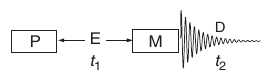
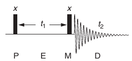

<!DOCTYPE html>
<html lang="en">
<head>
    <meta charset="utf-8">
    <meta name="viewport" content="width=device-width, initial-scale=1.0"> 
    <meta name="description" content="2D NMR"/>
    <title>2D NMR</title>
    <link rel="stylesheet" type="text/css" href="../../style.css" media="screen">
</head>

<body>

<nav>
    <ul>
        <li><a class="navbar" title="home" href="../../index.html">Home</a></li>
        <li><a class="navbar" title="lexicon" href="index.html">Index</a></li>
    </ul>         
</nav>
      
<div class="content">
 
<h1>2D NMR</h1>

<p>The first point to clarify when discussing two-dimensional techniques is the fact that the two dimensions refer to <b>two frequency dimensions</b>, whereas the so-called 1D methods have, of course, only one. In either case, there will also be a dimension representing signal intensity, although this is never usually included when describing the dimensionality of an experiment. The two frequency dimensions may represent any combination of chemical shifts or scalar couplings.</p>

<h2>Generating a second dimension</h2>

<p>No matter what the nature of the interaction to be mapped, all two-dimensional sequences have the same basic format and can be subdivided into four well-defined units termed the preparation, evolution, mixing and detection periods (Fig. 5.1).</p>

<figure>

<figcaption>Figure 5.1. The general scheme for any two-dimensional experiment. P, Preparation; E, evolution; M, mixing
and D, detection.</figcaption>
</figure>

<p>Il periodo di preparazione (P) ha lo scopo di far equilibrare il sistema e infine di generare la magnetizzazione trasversale (single-quantum coherence) tramite un singolo impulso a 90° oppure in un cluster di impulsi. Nel periodo di evoluzione (E), M<sub>xy</sub> evolve sotto l'effetto del chemical shift e dell'accoppiamento. Il periodo t<sub>1</sub> non è fisso ma viene incrementato sistematicamente in una serie di esperimenti separati, nessuna osservazione viene effettuata durante questo periodo. Il periodo di mescolamento (M) permette il trasferimento di magnetizzazione tra gli spin accopiati scalarmente o dipolarmente. Al termine di questo periodo è presente l'impulso che permette la rivelazione.</p>

<p>Il segnale rilevato è quindi funzione di due variabili temporali S(t<sub>1</sub>,t<sub>2</sub>) rispetto alle quali si
effettuano le trasformate di Fourier, ottenendo un segnale S(f<sub>1</sub>,f<sub>2</sub>) nel dominio delle
frequenze.</p>

<figure>

<figcaption>Figure 5.2. An illustrative dimensional sequence in which P and M are 90° pulses. This is also basic COSY sequence.</figcaption>
</figure>

<p>Viewing events with the vector model (Fig. 5.3), the initial 90<sub>x</sub> pulse places the equilibrium magnetisation in the x–y plane along the +y axis, after which it will precess (or evolve) according to this chemical shift offset. After a time period t<sub>1</sub>, the vector moves through an angle of 360 t<sub>1</sub> degrees and is then subject to the second pulse. To appreciate the influence of this pulse, it is convenient to consider the vector as comprising two orthogonal components, one along the original y axis (M<sub>0</sub> cos 360 t<sub>1</sub>) and the other along the x axis (M<sub>0</sub> sin 360 t<sub>1</sub>). The second 90x pulse places the y-component along the –z axis whilst the x-component is unaffected and remains precessing in the transverse plane and produces the detected FID. Fourier transformation of this FID will therefore produce a spectrum containing a single resonance whose intensity depends upon the factor sin 360 t<sub>1</sub>. Performing this experiment with t<sub>1</sub> set to zero means the two 90x pulses will add to produce a net 180x pulse, which simply corresponds to inversion of the equilibrium vector. As there exists no transverse magnetisation, there is no signal to detect, and the spectrum contains only noise. Now imagine repeating the experiment a number of times with the t<sub>1</sub> interval increased by a uniform amount each time and the resulting FIDs stored separately. As t<sub>1</sub> increases from zero, the resulting signal intensity also increases as x-magnetisation has time to develop during the evolution period, reaching a maximum when it has evolved through an angle of 90°. Further increases in t<sub>1</sub> cause the x-component to diminish, pass through a null, then become negative and so on according to the sine modulation. Subjecting each of the acquired t2 FIDs to Fourier transformation produces a series of spectra containing a single resonance whose intensity (or amplitude) varies as a function of time according to sin 360 t<sub>1</sub> (Fig. 5.4). With longer values of t<sub>1</sub>, relaxation effects diminish the intensity of the transverse magnetisation according to T<sub>2</sub>*, so the signal intensities show a steady (exponential) decay in addition to the amplitude modulation. The intensity of the resonance as a function of time therefore represents another FID for the t<sub>1</sub> time domain (referred to as an interferogram) that has been generated artificially or indirectly (Fig. 5.5). The frequency of the amplitude modulation corresponds to the chemical shift offset of the resonance in the rotating frame, and we say the magnetisation has been frequency-labelled as a function of t<sub>1</sub>. Subjecting this time-domain data to Fourier transformation, one would again expect this to produce a single resonance with a chemical shift of  Hz in the f<sub>1</sub> frequency domain, just as for the f<sub>2</sub> domain. Generalising this process requires monitoring the intensity of every data point
in the f<sub>2</sub> domain as a function of t<sub>1</sub> to produce a complete 2D data set. Following Fourier transformation with respect to t<sub>1</sub>, another complete frequency domain is generated, which, in combination with the conventional domain, produces a two-dimensional spectrum displaying a single resonance at  Hz in both dimensions (Fig. 5.6). Note that the labelling of the frequency axes as f<sub>1</sub> and f<sub>2</sub> follows from the ordering of the corresponding time domains in the pulse sequence, that is, t<sub>1</sub> followed by t2. The new artificial (t<sub>1</sub>) time domain has been sampled discretely by recording a FID for each t<sub>1</sub> time point and storing each separately, analogous to the sampling of the t2 data points described earlier. The repeated acquisition of FIDs with systematically incremented t<sub>1</sub> time periods (Fig. 5.7) is fundamental to the generation of all two-dimensional data sets. Indeed, this simple idea can be extended to produce a three-dimensional spectrum simply by having three independently incremented time periods, one detected ‘directly’ and two ‘indirectly’ (Fig. 5.8); although the technical details may be a little complex, the principle is quite straightforward. The philosophy behind the multi-dimensional approach is that one signal modulated as a function of one time variable (say t<sub>1</sub>) is detected at some later point as a function of another (t2 in the case of a 2D experiment). These general descriptions apply equally to spectra that contain many resonances. Repeating the above experiment for a sample containing just two uncoupled spins with offsets of A and  X Hz results in a spectrum with two 2D singlets whose frequencies in both dimensions correspond simply to the respective chemical shift offsets of the resonances (Fig. 5.9).</p>

<p>Having gone to the trouble of generating a two-dimensional data set, the spectra of Figs 5.6 and 5.9 tell us nothing that we could not derive from the corresponding one-dimensional spectra, simply the chemical shifts of the participating nuclei. This provides no new information because the 2D peaks map (or correlate) exactly the same information in both dimensions ( 1 =  2), in this case the chemical shifts. Two-dimensional spectra become useful when the peaks they contain correlate different information on the two axes, that is, when 1 61⁄4  2. This requires that magnetisation evolving at frequency 1 during the t<sub>1</sub> time period then evolves at a different frequency 2 in the detection (t2) period. Clearly for this to happen, there must be some mechanism by which the magnetisation precession frequency changes during the sequence, and more specifically within the mixing period. The details of this period dictate the information content of the resulting spectrum according to the interaction that is exploited, that is coupling, NOE or chemical exchange. Just how the informative correlation peaks are produced will become apparent as various sequences are examined in the sections that follow. Before moving on, a comment on the presentation of 2D spectra is required. The spectra of Figs 5.6 and 5.9 have been presented in the ‘stacked-plot’ mode to emphasise the similarity with 1D spectra and the presence of two frequency axes and one intensity axis. Although these may look aesthetically impressive, this form of presentation is of little use in practice. The usual way to present 2D spectra is via ‘contour plots’, in which peak intensities are represented by contours, as a mountain range would be represented on a map. Figure 5.10 shows the equivalent contour presentation of Figs 5.6 and 5.9, and unless stated otherwise, all 2D spectra from now on will make use of this contour mode.</p>
            
<section>
<a href="dlconfiguration.html">&#171;D- and L- configuration</a>
<a href="index.html">Index</a>
<a href="transverserelaxation.html">Transverse Relaxation&#187;</a>
</section>

</div>

</body>
</html>
